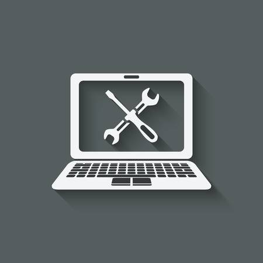

Existen dos tipos de mantenimiento los cuales son:
Mantenimiento Preventivo de Computadoras
El objetivo principal del mantenimiento preventivo es alargar la vida útil de tu computadora y evitar posibles fallas en un futuro y que básicamente consiste en la limpieza física Interna y Externa del equipo de cómputo, así como también un análisis y optimización del Software que compone la parte lógica de las computadoras.
Mantenimiento Correctivo de Computadoras
En algunos casos, puede ser imposible de predecir o prevenir un error en sus sistemas de computo, lo que hace del mantenimiento correctivo la única opción. El Mantenimiento correctivo es una forma de mantenimiento que se realiza después de un fallo o problema, que surge con el objetivo de restablecer la operatividad del sistema. El mantenimiento correctivo resulta aplicable en:
Sistemas complejos, normalmente en componentes electrónicos o en aquellos donde no es posible prever fallas, y en los procesos que admiten ser interrumpidos en cualquier momento y durante cualquier tiempo.
|
Reparaciones de Computadoras
Contamos con Reparación de Computadoras Desktop y Laptop de las marcas ya mencionadas, re-instalación de sistema operativo, eliminación de virus, instalación de antivirus, recuperación de información perdida, configuración de red lan y wifi. Cambios de pantallas para laptops, reparación de conector de carga, reparación de mother board, reparación de cargador, cambios de fuentes de poder en desktop y reparación de fuentes de poder.
En Metrica S.A. damos soluciones dando explicaciones detalladas de los problemas encontrados en su computadora y contamos con técnicos calificados para su mayor satisfacción.
- si su computadora esta:
- Muy lenta
- No ingresa al sistema operativo
- No enciende
- Se sobre calienta
- Se reinicia sin razón
- Muestra una pantalla azul
- Enciende pero no se mira nada

NOSTROS SOMOS LA MEJOR OPCION DE EMPRESAS DE SU CONFIANZA DE REPARACIONES Y MANTENIMIENTO , CONTAMOS CON TODOS LOS PROTOCOLOGOS DE SEGURIDAD.
|